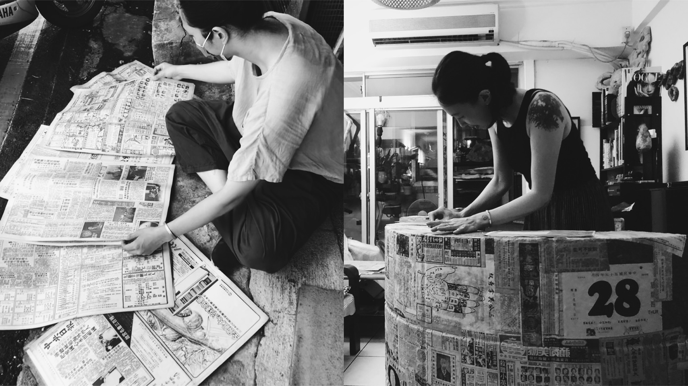
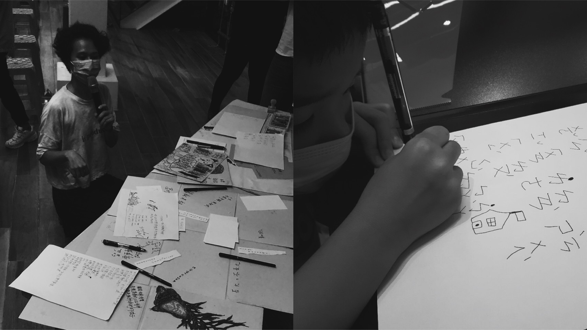
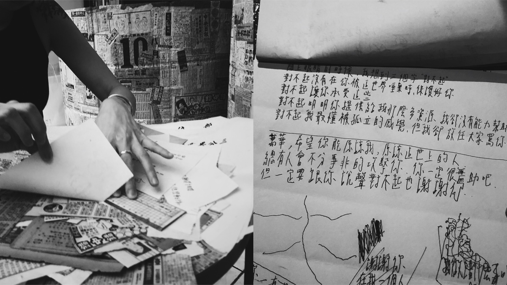
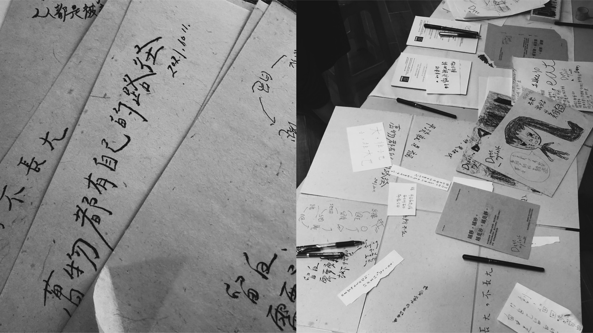
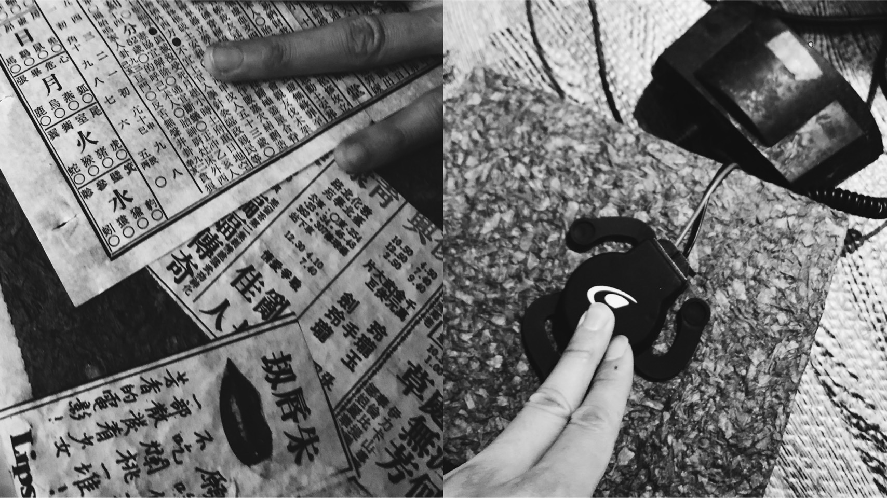

請依照隨機出現的問題，將回答輸入在回應欄中，送出即可聆聽井中鏡的心底回聲。
井中鏡 Echo of the Mind
「聽聽地景的回聲，對自己心底的井說句話吧！」
由不同時代報章訊息組成的井，象徵城市發展至今人們的夢想與感情，沿著地面砌起的字句土磚，往內至中心的水面映照出的自己，隱喻著現在的自己，是延續這片土地所發生的每一件事，所影響著的每一個人而成為的樣子。觀者可以透過閱讀古今訊息並透過互動裝置的提問回應，聆聽、觀看、思考、梳理，感受這個城市還有自己的心，那些過去跟現在的故事，還有那份對未來炙熱的願望。
互動介面中設計了探討人的情感與覺察的隨機提問，讓參與者輸入想表達與回應的真實話語，互動裝置將發出觀者回應的內容作為井中的回音，就像在跟平行世界中的自己對話一般，透過水波漣漪與回聲震動產生內心的共鳴。裝置外觀運用紙纖維雕塑技法重新組合拼貼，成為一座集合人們的願望與夢想的地井與地景。
作品：井中鏡
材質：紙纖維、樹脂、木、鐵、鏡、電子設備
創作團隊｜
製作群：
互動裝置與聲音設計：紀柏豪
聲音與互動技術執行：陳旻靖
纖維雕塑創作藝術家：林希羽
作品概念與體驗設計：謝欣翰
視覺與介面設計執行：沈芳玉
附註說明與特別感謝：
本作品為第二回巡展，首次展出於「2021臺北地景公共藝術計畫-萬華地景藝術節」透過工作坊的書寫以及田調的成果呈現於作品的部分呈現中，感謝當時萬華在地居民店家的協力，還有引導自由書寫的Date Myself陳君芃。以及所有參與過本件作品的各方長官與朋友。
製作過程與工作坊側拍紀錄：




